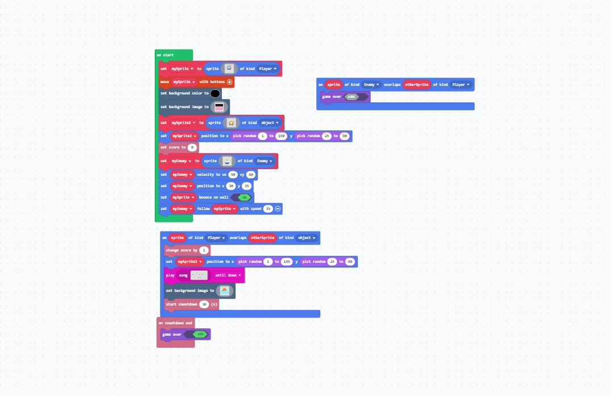
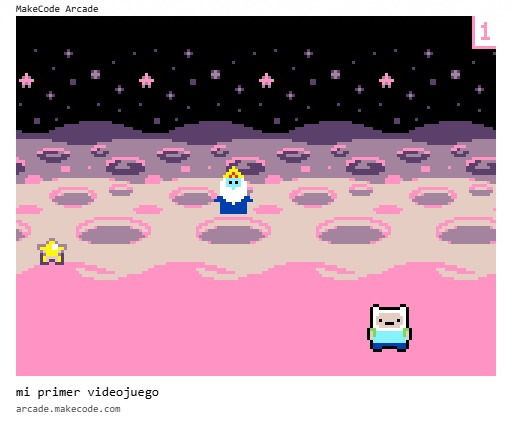

La idea fue crear un juego inspirado en Finn el Humano. En el juego, Finn debe escapar del Rey Helado para evitar enfrentamientos y problemas, mientras recoge estrellas que representan acciones positivas y le permiten obtener puntos. De esta manera, los elementos del videojuego tienen un significado relacionado con nuestro proyecto: evitar los conflictos y buscar alternativas positivas para convivir con los demás.
La idea fue crear un juego inspirado en Finn el Humano. En el juego, Finn debe escapar del Rey Helado para evitar enfrentamientos y problemas, mientras recoge estrellas que representan acciones positivas y le permiten obtener puntos. De esta manera, los elementos del videojuego tienen un significado relacionado con nuestro proyecto: evitar los conflictos y buscar alternativas positivas para convivir con los demás.
El jugador controla a Finn y debe:
